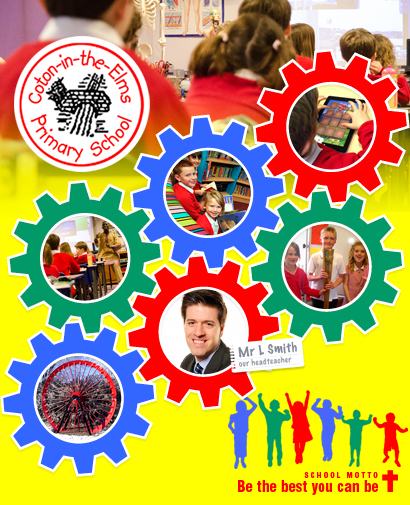

We were invited to take some children to the Cerebral Palsy World Championships at St George's Park.
We took a team of Y5 and 6 children to the hockey tournament at Foremark Hall. The children did brilliantly, with a record of won two, drew one and lost one.
This year we took 59 children to the Genting Arena (formally the LG Arena), Birmingham for the Young Voices concert. This was the second consecutive year that we sang as part of a massed choir of over 5000 children!
To challenge Years 3 and 4, we set the children a ‘Brain Builders’ extended project, giving the children the choice of how they presented their learning. The results have been fantastic!
To challenge Years 3 and 4, we set the children a ‘Brain Builders’ extended project, giving the children the choice of how they presented their learning. The results have been fantastic!